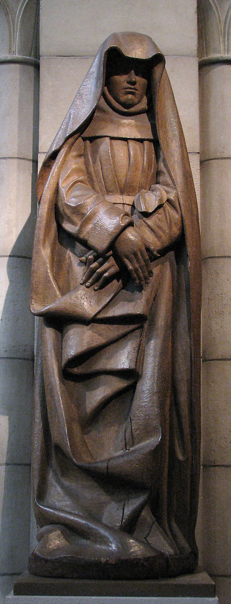

Reading Visuals
Critical Analysis on the Way We See Art

Created around mid- to late-15th century A.D., Mourning Virgin from a Crucifixion Group is a French sculpture made of walnut with traces of paint, currently on display at The Metropolitan Museum of Art. While its title suggests the act of “mourning”, the sculptor barely presents the figure’s sorrow through direct signs, such as facial expression or tears. Instead, the sculptor creates a solemn, quiet and almost unapproachable atmosphere with the figure’s pose as well as the use of shadow and visual weight. In the absence of the direct clues associated with mourning, these rather subtle representations help internalize the figure’s agony and convey an even stronger and more repressive emotional suffering.
One of the most noticeable features of the sculpture is that about half of the figure’s face is covered by the shadow of cloth, which automatically generates a sense of distance between the sculpture and the viewer. No matter how close the viewer is to the sculpture, or the different angles he or she approaches, it is almost impossible to have any eye contact with the figure, let alone feeling emotions from its eyes. From an extreme close-up photo of the figure’s face, one can find out that the boundary of the veil’s shadow cuts exactly through the lower edge of the eyes. Quite possibly, the exactness may not be coincidence, but the sculptor’s deliberate intention to not show the figure’s eyes to the viewer. In addition, for the remaining facial parts that are visible, there is barely, if any, detail that can align with “mourning”. Instead, the expression seems fairly emotionally detached with the closed lips—no crying or wailing, almost too calm to convey any feelings. However, if the viewer looks at the sculpture as a whole, there is little doubt that the figure is immersed in sadness or undergoing a distressing moment. The question is: Where does this sorrow come from?
Quite different from the common approach to depict emotional pain, the sculptor shifts the viewers’ attention from the figure’s face to its lower body, where we focus on the hands and the clothing folds, with disruptive lines. What is interesting is that the entire sculpture is mostly created in vertical lines, including the outline of the veil, the standing pose of the figure, and the clothing folds—except for the folds in the middle, which go in horizontal zigzag lines. Compared to other smooth lines, these abrupt, zigzag lines generate a rough, uneasy feeling that echoes with the figure’s sorrow and complicated emotion.
Moreover, these folds also create layers with an important element of this sculpture—the shadow, by allowing space between two folds. While this sculpture is made of brown walnut lumber, which has relatively few color variations, the use of shadow helps construct a wider range of colors—from light brown to dark black—as well as the dramatic contrast between light and darkness. In addition to building up a stronger sense of depth and a three-dimensional perspective, the shadow also possesses functional value that influences the sculpture’s compositional structure, such as hindering the visibility of the figure’s gaze, as mentioned in the second paragraph, that adds on the remoteness and inaccessibility of the figure.
Besides shadow, the sculptor also uses the folds’ exaggeratedly large sizes and thickness to establish visual weight, which generates physical and emotional heaviness. Distinct from the common conception of fabrics as soft and lightweight, the sculptor intentionally makes the clothing folds at the figure’s lower body way thicker than its upper part. On the one hand, it further emphasizes the lower body’s heaviness, which again, aids to direct the viewers’ focuses. On the other hand, this heaviness also creates a sinking force that drags the viewers’ hearts downwards. The disproportionally large folds serve similar purpose. By adding visual weight to the lower part of the sculpture, the sculptor establishes a depressing mood reinforcing the figure’s gloominess and sorrow.
Instead of revealing the sadness of the figure through evident hints, the sculptor takes a unique approach by dramatizing and distorting the inanimate elements—such as shadows and clothing folds—to shape the center of attention and impact visual weight. The effects of these inanimate things play a vital role by conveying the deep mourning and creating a distressing atmosphere. This observation, however, is not to ignore the sculptor’s attempt to imply complex emotions on lively objects as well. For instance, among the very few body parts revealed, the figure’s left hand appears to be tense that shows its nervousness while the right hand seems to soothe and repress it to stay calm, which also represents the contradiction between the figure’s inner sadness and its calm pose. Yet most importantly, the sculptor does empower the originally neutral elements to carry intense emotions, therefore drastically manipulate and impact the viewers’ perceptions and feelings of the sculpture.